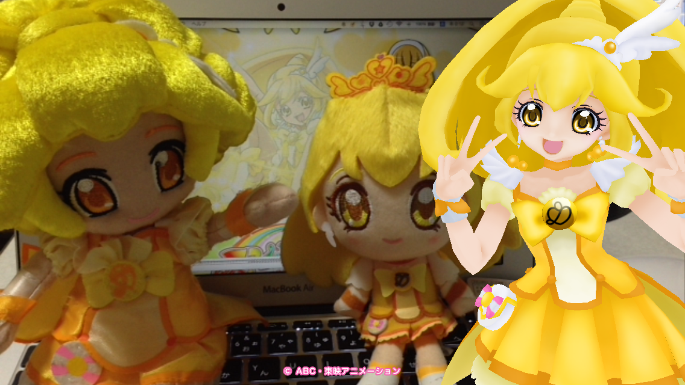
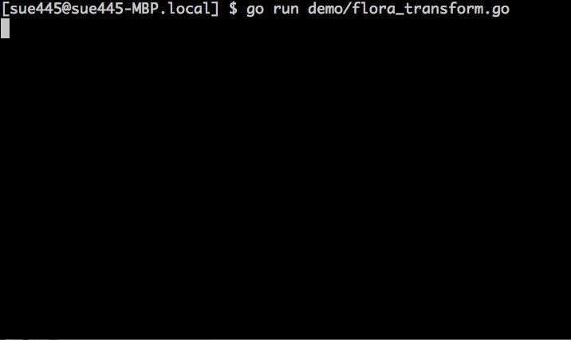
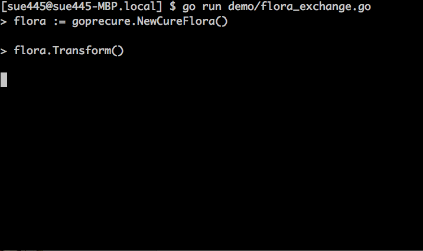
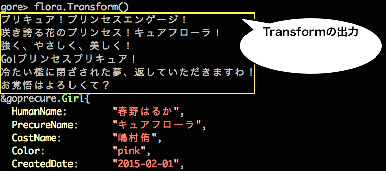
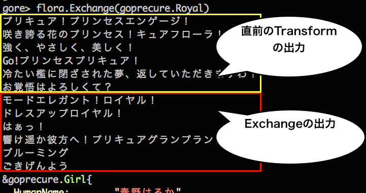

GoがGoでGo!プリンセスプリキュアを作った
Go Sueyoshi a.k.a sue445
2015/12/06 Go Conference 2015 Winter
自己紹介
- Go Sueyoshi a.k.a @sue445
- golang歴 3ヶ月
- Go歴 33年 (33歳)
- 【警告】Twitterは上級者向けのアカウントなので決してフォローしないでください！
- Railsの会社でサーバサイド全般を浅く広く見守るお仕事
- インフラ、アプリ、ライブラリ、社内ツールetc
- 会社ではプリキュアおじさんと呼ばれています
【今期の嫁】キュアトゥインクル

【本妻】キュアピース

Agenda
- 「Go!プリンセスプリキュア」とは？
- GoPrecureとは
- 使い方
- 苦労したこと
- 他言語でのプリキュア実装の紹介
「Go!プリンセスプリキュア」とは
日曜朝8:30からテレビ朝日系で放映しているアニメ
GoPrecureとは
「Go!プリンセスプリキュア」のgolang実装です

使い方
go getしてimport
go get github.com/sue445/goprecure
import github.com/sue445/goprecure
プリキュアのインスタンスを作成
// キュアフローラ
flora := goprecure.NewCureFlora()
// キュアマーメイド
mermaid := goprecure.NewCureMermaid()
// キュアトゥインクル
twinkle := goprecure.NewCureTwinkle()
// キュアスカーレット
scarlett := goprecure.NewCureScarlett()
Name で名前を取得
flora := goprecure.NewCureFlora()
flora.Name()
// 春野はるか
Transform で変身
flora.Name()
// 春野はるか
flora.Transform()
flora.Name()
// キュアフローラ
実際にはこんな感じ

GoPrecureではフォームチェンジを忠実に再現

各プリキュアに対応するドレスアップキー
// キュアフローラ
g.DressupKeys = []DressupKey{Flora, Rose, Lily, Sakura, Royal}
// キュアマーメイド
g.DressupKeys = []DressupKey{Mermaid, Ice, Bobble, Sango, Royal}
// キュアトゥインクル
g.DressupKeys = []DressupKey{Twinkle, Luna, ShootingStar, Ginga, Royal}
// キュアスカーレット
g.DressupKeys = []DressupKey{Scarlett, Hanabi, Phoenix, Sun, Royal}
苦労したこと
- GoPrecureに適したREPLがない
- 4〜5種類くらい使って総合的に gore が一番よかったが、直前までの入力を全部実行しているので標準出力に出力するメソッドとの相性が悪い
例


Transform の後に Exchange すると Exchange の標準出力だけ出してほしいのに直前の Transform のも一緒に出るので邪魔
golangのREPLがまだGoPrecureに追いついていない感があるｗ
プリキュアの他言語での実装の紹介
- Ruby: rubicure (@sue445)
- GitHubのstarも多いしおそらくこれがたぶん一番有名
- Perl: Acme::PrettyCure (@kan)
- Python: pycure (@drillbits)
- Groovy: groovycure (@ligun)
- clojure: clocure (@kaosf)
rubicureとGoPrecureの設計思想の違い
rubicureの設計思想
- Rubyの柔軟性を利用してメタプロを大活用
- クラスにメソッドはほとんど定義せずに
method_missingでymlに飛ばすとか
- クラスにメソッドはほとんど定義せずに
-
transform!（変身） やattack!（必殺技） など破壊的メソッドには!をつけるRubyの慣習に則った - 基本的にプリキュア全員対応するため特定のシリーズに特化させない汎用的な設計
- rubicureのおかげでRubyの勉強になった
GoPrecureの設計思想
- 静的型付けを意識した設計
-
DresupKeyという型をconstで定義することによりExchangeに未知のドレスアップキーが引数がわたらないようにした（コンパイルエラーになる）
-
- Go!プリンセスプリキュアだけに特化させることでドレスアップキーとモードチェンジを関連付けた実装が実現した
- GoPrecureのおかげでgolangの勉強になった
まとめ
新しい言語を勉強する時は自分の好きなものを実装すると良い。